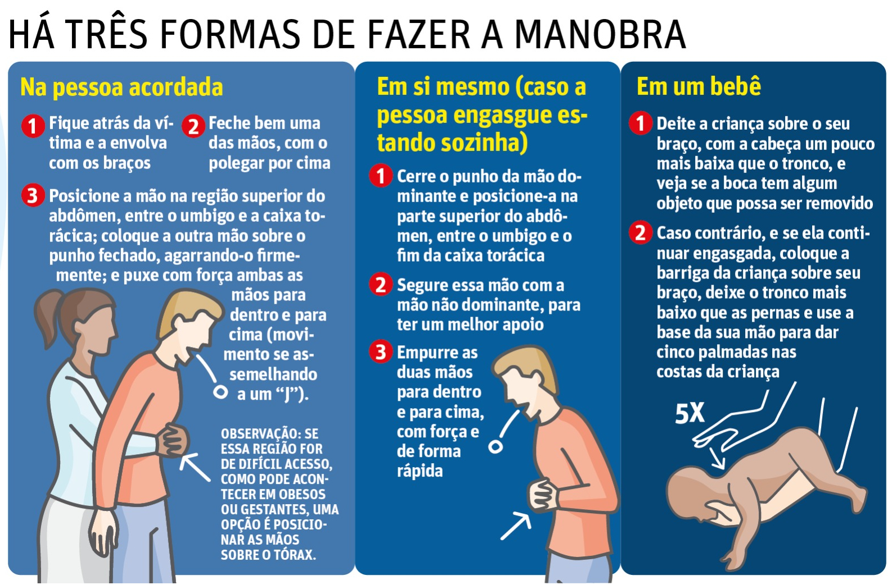
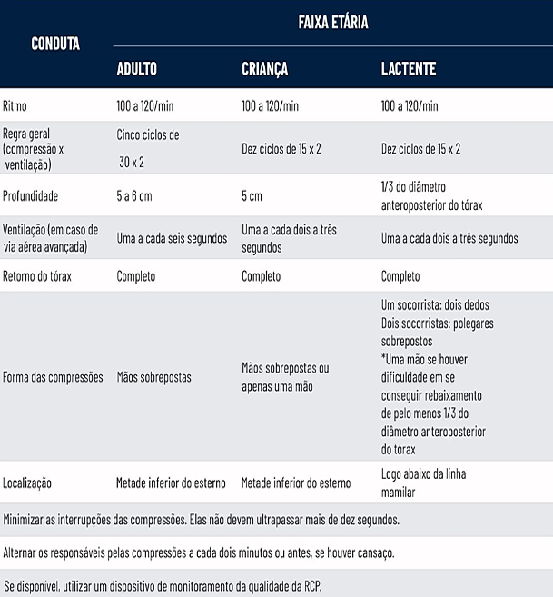

xabcde

HEMORRAGIAS EXSANGUINANTES (X)
Nesta fase, deve-se avaliar a presença de hemorragias massivas e tratá-las imediatamente. A atenção aos sangramentos é uma constante ao longo da evolução dos serviços de emergência, devido ao reconhecimento da gravidade associada à perda de sangue. Em qualquer abordagem sistematizada da avaliação do paciente na emergência, a identificação rápida e controle efetivo de sangramentos externos são prioridades fundamentais. Portanto, a contenção de hemorragias significativas deve ser realizada como ação prioritária, antecedendo até mesmo a avaliação da via aérea. Essa abordagem visa minimizar os riscos decorrentes da perda sanguínea imediata.
EXISTEM TRÊS TÉCNICAS PARA CONTROLE DE HEMORRAGIA
● Torniquete; ● Compressão Direta; ● Preenchimento.
ABERTURA DAS VIAS AÉREAS (A)
Neste estágio, examinamos a permeabilidade das vias aéreas, procurando por sinais de obstrução causados por edemas, sangramentos ou vômitos. A presença de respiração ruidosa indica uma obstrução parcial das vias aéreas, podendo evoluir rapidamente para uma obstrução total. Torna- se, portanto, essencial garantir uma via aérea definitiva por meio do Suporte Avançado. Durante a avaliação, é importante remover corpos estranhos e, se necessário, considerar a aspiração das vias aéreas superiores.
Inspecionar cavidade oral:
● Língua ● Sangue ● Substâncias orgânicas ● Corpos estranhos
Tração da mandíbula ou elevação do mento
No trauma, existem vários mecanismos que podem comprometer a permeabilidade das vias áreas, como fratura da face, da mandíbula, fratura traqueal ou lesão de laringe. Nesses casos deve- se iniciar medidas para estabelecer a permeabilidade das vias aéreas enquanto se restringe o movimento da coluna, seja recebendo estabilização manual ou, constatada a necessidade, colocando- se o colar cervical. Traumas cervicais também podem causar obstrução da via aérea, tanto pela origem contusa, como pela penetrante. Para garantir ao paciente adequada restrição do movimento da coluna, o socorrista deve estar em posição estável, de joelhos no chão ou deitado, apoiando os cotovelos para garantir boa estabilidade às suas mãos a fim de não fazer movimentos bruscos.
BOA VENTILAÇÃO (B)
Neste momento, procede-se à verificação da qualidade da respiração e da oxigenação. Para isso, expõe-se o tórax e o abdome do paciente, permitindo a avaliação do padrão ventilatório, a simetria da expansibilidade torácica e indicadores de esforço respiratório, tais como o uso de musculatura acessória sub e intercostal, retração de fúrcula e batimento de asa de nariz. Além disso, é importante avaliar o posicionamento da traqueia e verificar a presença ou ausência de turgência jugular, caso ainda não tenha sido feito anteriormente.
Verifique se a vítima está ventilando adequadamente;
● Exponha o tórax da vítima;
● Estime a profundidade, frequência, expansão e bilateralidade da respiração;
● Avalie e apalpe o tórax se tiver alguma das alterações acima;
Em caso de ausência de respiração, manobras de reanimação respiratória devem ser adotadas imediatamente. Nestas situações (e sempre que possível), dois socorristas devem ventilar o paciente: um socorrista no posicionamento e vedação da máscara à face do paciente, utilizando as duas mãos para isso, e outro socorrista na ventilação propriamente dita.
É de suma importância o reconhecimento do comprometimento ventilatório e a garantia de ventilação eficaz. Agitação, cianose, sons respiratórios anormais, voz rouca, deslocamento traqueal e redução da responsividade são sinais de alteração respiratória. Deve-se reavaliar com frequência a permeabilidade da via aérea e a ventilação, e corrigir imediatamente as alterações encontradas.
CIRCULAÇÃO E CONTROLE DE HEMORRAGIAS (C)
O socorrista deve realizar uma avaliação cuidadosa da circulação do paciente, buscando identificar precocemente sinais que indiquem a presença de choque decorrente de disfunção circulatória, como taquicardia e vasoconstrição periférica. Esses indicadores podem levar a má perfusão e oxigenação tecidual inadequada. No contexto de trauma, a circulação sanguínea comprometida está frequentemente associada à hipovolemia. Portanto, é crucial identificar a possível causa, distinguindo entre hemorrágicas e não hemorrágicas, para fornecer o tratamento mais apropriado ao paciente. Assim, qualquer paciente vítima de trauma com pele fria e taquicardia deve ser considerado em estado de choque até que se prove o contrário.
● Na avaliação observe: Frequência bilateral do pulso radial e pulso central.
● Na pele: Temperatura, umidade/aspecto e cor.
● O tempo de enchimento capilar (perfusão): o tempo de enchimento capilar ≤ 2 segundos.
Lembrando-se que as realizações de contenções de grandes hemorragias externas devem ser feitas no início. Além disso, não adianta oxigenar as hemácias se elas não chegarem aos tecidos. Cada hemácia é importante no transporte de oxigênio. Em caso de ausência de pulso central, solicitar Suporte Avançado e iniciar imediatamente manobras de ressuscitação cardiopulmonar (RCP). Ressalte-se a importância de sempre regular as ocorrências. Deve-se ficar atento quanto aos possíveis sinais de choque (sendo o primeiro deles a taquicardia) para proceder às intervenções precoces e primordiais à manutenção da vida do paciente.
DISFUNÇÃO NEUROLÓGICA (D)
Por definição, o nível de consciência é “o grau de alerta comportamental que o indivíduo apresenta”, o que permite uma vasta possibilidade de variação desse parâmetro em pacientes. Portanto, é necessária a utilização de escalas que permitam a padronização da linguagem utilizada para facilitar a avaliação e a solicitação de recursos adicionais na passagem do estado do paciente para o médico (regulador, na cena ou no hospital) e no registro desses parâmetros na ficha de atendimento.
A análise do nível de consciência é feita pelo método “AVDI”, de acordo com o nível de resposta que a vítima tem que dá aos estímulos:
● A Vítima ACORDADA com resposta adequada ao ambiente.
● V Vítima adormecida. Os olhos se abrem mediante estímulo VERBAL.
● D Vítima com os olhos fechados que só se abrem mediante estímulo DOLOROSO. O estímulo doloroso deve ser aplicado sob a forma de compressão intensa na borda do músculo trapézio, na região póstero-lateral do pescoço.
●I Vítima não reage a qualquer estímulo, inconsciente. A alteração do nível de consciência pode ocorrer pelos seguintes motivos:
- Diminuição da oxigenação cerebral (hipóxia ou hipoperfusão);
- Traumatismo cranioencefálico (hipertensão intracraniana);
- Intoxicação por álcool ou droga.
EXPOSIÇÃO E AMBIENTE (E)
As principais medidas tomadas incluem despir a vítima para analisar a extensão das lesões e controlar o ambiente para prevenir a hipotermia. O socorrista deve avaliar, entre outros aspectos, sinais de trauma, sangramento e manchas na pele. É relevante destacar que a parte do corpo que não está exposta pode esconder a lesão mais grave que afeta o paciente. É importante lembrar que a exposição deve ser apenas do necessário para revelar o ferimento mais significativo, respeitando o pudor da vítima, especialmente em ambientes públicos.
DESOBSTRUÇÃO DE VIAS AÉREAS

OBJETIVOS: demonstrar os procedimentos para atendimento de pacientes com obstrução de vias aéreas por corpo estranho (OVACE). INDICAÇÃO: Adultos, Crianças, Lactente, Gestante e Obesos.
ATENDIMENTO AO PACIENTE ADULTO
I. Se o paciente estiver consciente, verifique a presença de fala, tosse e/ou respiração
OBS.: Caso seja constatada a presença de respiração, fala e/ou tosse, tranquilize o paciente e inicie o transporte, mantendo-o na posição sentada e monitorando seu estado durante o deslocamento.
II. Se o paciente não consegue respirar, falar e/ou tossir, inicie as compressões abdominais em “J” (Manobra de Heimlich).
III. Caso o paciente se torne inconsciente, cheque a boca a procura de corpos estranhos, acione os órgãos de atendimento emergenciais através do número - SAMU (192), e inicie RCP.
ATENDIMENTO EM GRÁVIDAS E OBESOS
Posicione as mãos no osso esterno, executando a compressão about o tórax. Se necessário, coloque o paciente em uma superfície rígida e comprima. Para realização da manobra, posicione-se atrás do paciente, passe os braços por baixo das axilas, feche um dos punhos e envolva-o com a outra mão. Posicione o punho entre a cicatriz umbilical e o processo xifoide do paciente. Pode-se utilizar como referência anatômica dois dedos acima da cicatriz umbilica.
ATENDIMENTO AO PACIENTE CRIANÇA
I. Se o paciente estiver consciente, verifique a presença de respiração, fala e/ou tosse
OBS.: Caso seja verificada a presença de respiração e/ou fala e/ou tosse, acalme o paciente e inicie o transporte mantendo o paciente na posição sentada
II. Se o paciente não consegue respirar, falar e tossir, inicie as compressões abdominais em “J”.
OBS.: Para realização da manobra, abaixe-se atrás do paciente, passe os braços por baixo das axilas, feche um dos punhos e envolva-o com a outra mão. Posicione o punho entre a cicatriz umbilical e o processo xifoide.
III. Caso o paciente se torne inconsciente, cheque a boca a procura de corpos estranhos, acione os órgãos de atendimento emergenciais através do número - SAMU (192), e inicie RCP.
ATENDIMENTO AO PACIENTE LACTENTE E NEONATO
I. Verifique a consciência do paciente; se estiver consciente, verifique a presença de respiração, choro e/ ou sons.
OBS.: Caso seja verificada a presença de respiração e/ou choro e/ou sons, coloque o paciente no colo da mãe, ou do pai, ou mesmo do socorrista, e inicie o transporte, sob monitoramento.
II. Se o paciente estiver consciente e sem respiração, choro e/ou sons, verifique a existência de corpo estranho na cavidade oral e retire-o, caso haja; obs.: O objeto deve ser retirado apenas se estiver visível.
III. Execute, alternadamente, 5 “tapotagens” entre as escápulas do paciente e 5 compressões torácicas. Durante os procedimentos de desobstrução, a cabeça do paciente deve permanecer em nível inferior ao restante do corpo. O procedimento deve ser executado até a desobstrução do paciente ou até se tornar inconsciente. A desobstrução pode ser identificada por respiração, choro e/ou emissão de sons.
IV. Caso o paciente se torne inconsciente, cheque a boca à procura de corpos estranhos, acione os órgãos de atendimento emergenciais através do número - SAMU (192), e inicie RCP.
V. As compressões são realizadas posicionando-se dois dedos à distância de 1 dedo abaixo da linha intermamária do paciente, about o esterno.
RCP

PARADA CARDIORRESPIRATÓRIA
É a parada dos MOVIMENTOS RESPIRATÓRIOS e dos MOVIMENTOS DO CORAÇÃO, deforma súbita e inesperada. O coração para de bater, a circulação é subitamente interrompida. Diante da perda da função de bombeamento cardíaco, a circulação cessa e os órgãos vitais ficam sem oxigênio.
A ressuscitação cardiopulmonar (RCP) engloba um conjunto de manobras executadas para restabelecer a ventilação pulmonar e a circulação sanguínea. Inclui técnicas como respiração artificial e massagem cardíaca externa, sendo aplicadas em vítimas de parada cardiorrespiratória, também conhecida como morte clínica.
COMO IDENTIFICAR UMA PARADA CARDIORRESPIRATÓRIA:
1. Segurança da cena - identificar riscos que possam vitimar o socorrista e sua equipe.
2. Chamar pela vítima batendo vigorosamente no ombro da vítima (no bebê é na planta do pé). A vítima não responde, ESTÁ INCONSCIENTE (não mexe membros e nem pisca o olho).
3. Vítima não respondeu, chame ajuda, acione o serviço de emergência (SAMU 192) SOLICITAR O DEA - preferencialmente peça para outros chamarem o socorro;
4. Verificar se a vítima respira e tem pulso central. Adultos e Crianças - pulso carotídeo; Lactentes - pulso braquial ou femoral;
5. Não tendo sinal de pulso nem respiração iniciar as Compressões Torácica. Posicione a vítima no chão em decúbito dorsal, em superfície rígida, não se executa essa manobra em colchão ou sentada em cadeira. (mnemônico CAB).
CABD
No atendimento em adultos com PCR, o mnemônico CAB ou CABD descreve a ordem das intervenções. Essas medidas visam a restabelecer o quanto antes a circulação espontânea, a perfusão dos órgãos vitais e a chegada da equipe de ressuscitação:
1. C – Checagem: Checar a segurança do local, checar a responsividade da vítima, checar o pulso e a respiração, chamar por ajuda e iniciar as compressões. As compressões devem ser feitas em ciclos de 30 compressões, intercalados com a ventilação, ou contínuas, na frequência de 100 a 120 compressões por minuto, com uma profundidade de 5 a 6 cm, permitindo o retorno do tórax após cada compressão. O socorrista que está realizando a compressão deve ser substituído a cada dois minutos ou antes, se houver cansaço;
2. A – Abertura da via Aérea: A abertura da via aérea pode ser feita com a inclinação da cabeça para trás e elevação do queixo (manobra de Chin-Lift) ou com a anteriorização da mandíbula (manobra de Jaw-Thrust).
3. B – Ventilação: A oferta da ventilação pode ser feita utilizando um dispositivo bolsa-válvula-máscara (ambu) ou uma máscara de bolso (pocket-mask), na frequência de 2 ventilações a cada 30 compressões. É importante observar se durante a ventilação existem sinais de permeabilidade aérea, como a expansibilidade torácica ou abdominal durante a ventilação. Caso o socorrista não se sinta seguro para realizar a ventilação, a prioridade é a compressão de alta qualidade.
4. D – Desfibrilação: o uso de um DEA ajuda o socorrista a identificar se a vítima está em PCR, se é um ritmo chocável e, quando é o caso, aplica o choque na tentativa de reverter a PCR. ATENÇÃO!!! A vítima em parada cardiorrespiratória NÃO RESPIRA nem apresenta nenhum movimento, ESTÁ INCONSCIENTE. Caso apresente algum movimento, não é parada cardiorrespiratória!!!
REANIMAÇÃO CARDIOPULMONAR (RCP)
ADULTO - (depois da puberdade) - Posicione a região tenar e hipotenar de uma das mãos about o esterno (centro do peito entre os mamilos), coloque a outra aboutposta e entrelace-as; mantenha os braços em 90º em relação em solo e completamente estendidos.
● Realizar 30 compressões para cada 2 ventilações;
● Comprima na frequência de 100 a 120 movimentos por minuto;
● Permita o retorno total do tórax após cada compressão;
● Não se apoie about o tórax após cada compressão, nem durante as ventilações;
● Comprima na profundidade de 5 a 6 centímetros;
● Minimize as interrupções entre os ciclos de compressões (máximo de 10 segundos);
● Havendo mais de um socorrista, realize rodízio das compressões a cada 2 minutos;
● Utilize o DEA, logo que disponível.
CRIANÇA – (de 1 ano de idade até a puberdade) - use apenas uma mão para fazer as compressões no centro do tórax, entre os mamilos.
● Realizar 30 compressões para cada 2 ventilações - (um socorrista). Realizar 15 compressões para cada 2 ventilações - (dois socorristas);
● Comprima na frequência de 100 a 120 movimentos por minuto;
● Permita o retorno total do tórax após cada compressão;
● Não se apoie about o tórax após cada compressão, nem durante as ventilações;
● Comprima na profundidade de 5 centímetros;
● Havendo mais de um socorrista, realize rodízio das compressões a cada 2 minutos;
● Utilize o DEA, logo que disponível.
LACTENTE - (a partir de 28 dias até completar 1 ano) - Aplique as compressões no tórax em um ponto levemente abaixo de uma linha imaginária entre os mamilos. Faça as compressões usando apenas as pontas de dois dedos.
● Realizar 30 compressões para cada 2 ventilações - (um socorrista). Realizar 15 compressões para cada 2 ventilações - (dois socorristas);
● Comprima na frequência de 100 a 120 movimentos por minuto;
● Permita o retorno total do tórax após cada compressão;
● Comprima na profundidade de 1/3 do diâmetro anteroposterior do tórax;
● Havendo mais de um socorrista, realize rodízio das compressões a cada 2 minutos;
● Utilize o DEA, logo que disponível.
QUANDO INTERROMPER A REANIMAÇÃO (RCP):
● Se você notar algum movimento da vítima;
● A transferência da responsabilidade do cuidado para um profissional da saúde;
● Transferência do paciente para outra equipe;
● A exaustão dos socorristas que o impeça de continuar.
sobre
Este guia prático tem por objetivo esclarecer de forma sucinta os primeiros atendimentos a serem realizados em situações de emergência, visando a manutenção da vida, a segurança do socorrista e de sua equipe, até a chegada ou remoção do socorro especializado.
DEFINIÇÃO
Primeiros Socorros é toda ação ou intervenção imediata prestados rapidamente, ainda no local do fato, às vítimas de acidente, mal súbito ou enfermidades agudas e imprevistas até a chegada de recursos especializados, ou remoção da vítima para um Serviço de Atendimento Especializado.
QUEM PODE REALIZAR OS PRIMEIROS SOCORROS?
Qualquer pessoa que esteja devidamente treinada, ou esteja orientada para realizar as ações necessárias, a fim de prestar socorro e não piorar as lesões já existentes.